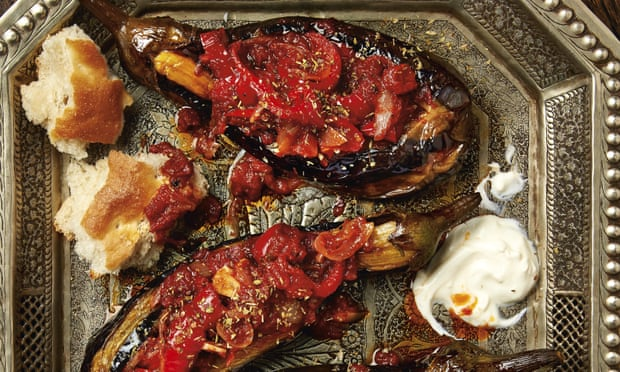

Imam bayildi

Best eaten the day after it’s made, and served at room temperature. I don’t routinely salt aubergines (modern varieties tend not to be bitter, which is what salting was designed to counter), but in this case I do because it’s a time-honoured way to ensure they’re properly seasoned. Serve with Turkish (or other soft white) bread, to mop up the juices, and Greek yoghurt.
Shave long, alternate strips of peel off the aubergines, top to bottom, so they end up striped, like zebras. Starting 2cm from the top, make an incision halfway into the flesh and cut down to 2cm shy of the bottom.
Put the aubergines in a large bowl and cover with two and a half litres of cold water. Squeeze in the lemon, drop in the skins and stir in two teaspoons of salt. Put a plate on top, to keep the aubergines immersed, and leave to soak for 45 minutes. Drain, then dry in a clean tea towel.
Heat the oil in a large saute pan on a medium-high flame. Fry the aubergines for eight to 10 minutes (take care, because the oil may spit), turning regularly, until nicely browned on all sides. Remove from the pan, turn down the heat to medium-low, add the onion and peppers, and cook for 10 minutes, stirring often, until soft but not coloured. Add the garlic and spices, cook for a minute, then stir in the tomatoes, two tablespoons of water, the sugar, fresh oregano, half a teaspoon of salt and a good grind of pepper. Turn the heat to low, put the aubergines on top of the veg, cover the pan and cook for 45 minutes, until the aubergines are steamed through.
In the meantime, heat the oven to 180C/350F/gas mark 4. Carefully lift out the cooked aubergines and place them cut side up in a 20cm x 30cm ceramic baking dish; they should be nice and snug. Prise open the aubergines, so they look like long canoes, then sprinkle the insides with a generous pinch of salt. Discard the oregano from the sauce, then spoon it into the aubergines, filling them as much as you can; don’t worry if some sauce spills out around them – it’s kind of unavoidable. Cover with foil and bake for 35 minutes. Remove the foil and leave the aubergines to cool to room temperature. Serve topped with a sprinkling of dried oregano.